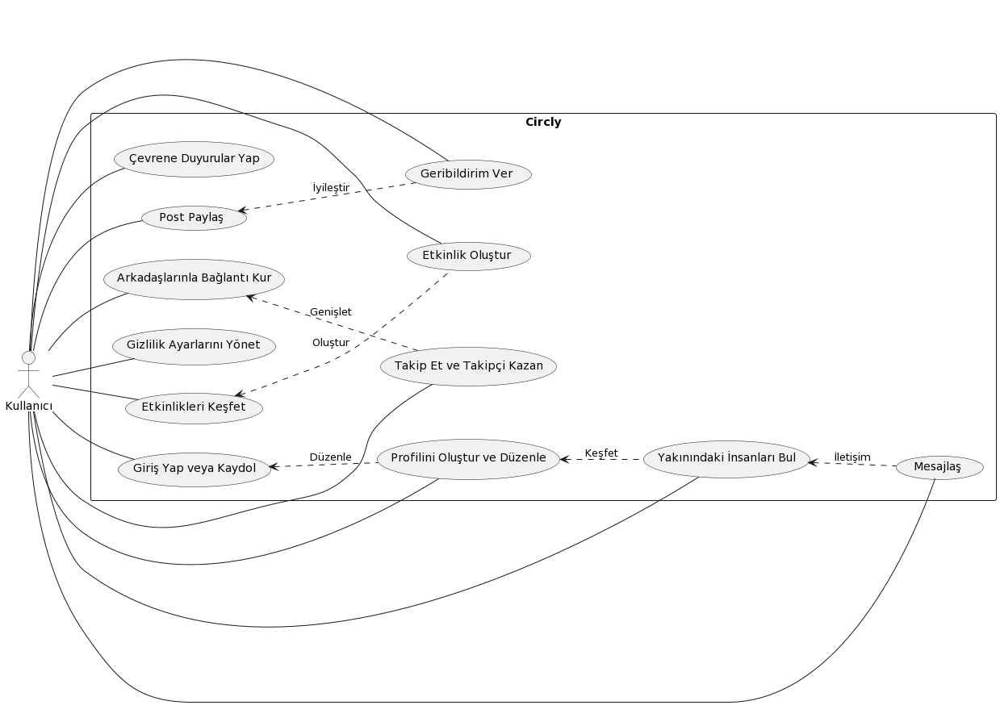
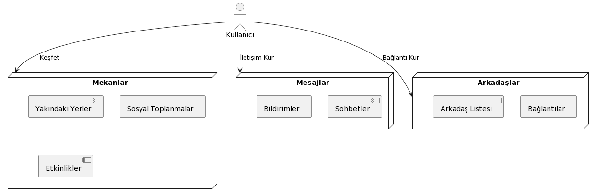
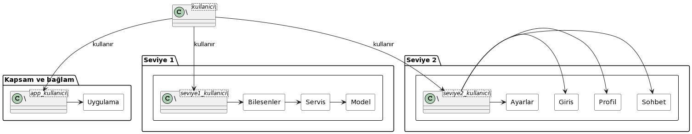

1. Giriş ve Hedefler
Circly, üniversite projesi olarak geliştirilen bir mobil uygulamadır. Circly, çevremizdeki insanlarla nasıl tanışıp konuştuğumuzu değiştiren yeni bir sosyal ağdır. Konum teknolojisini kullanarak, kullanıcıların etkinliklerde, toplantılarda, konserlerde veya sadece yolculuk esnasında yakınlarındaki diğer insanlarla buluşmalarını ve etkileşimde bulunmalarını sağlar. İster profesyonel ağınızı genişletmek isteyin, ister yeni arkadaşlar edinmek isteyin, Circly kolay ve sezgisel bir şekilde anlamlı bağlantılar kurmanıza yardımcı olur.
Projenin amacı, mevcut sosyal medya platformları gibi insanları sanal bir varoluşa iterek gerçeklikten uzaklaştırmak yerine, onları bir araya getirerek gerçek iletişimler kurmalarına teşvik etmektir. Kullanıcılar farklı uzaklık kategorilerine göre çevrelerindeki aktif kullanıcıları keşfedebilir, bu kullanıcıların profillerini görüntüleyebilir, onlarla iletişim kurabilirler. Bu kullanıcıları takip edebilir, diğer sosyal medya platformlarındaki gibi takipçi edinebilir, ve istediği kullanıcıyı takip edebilir. Kullanıcının verileri (konumu, mesajları vb.) gizlilik ilkelerine göre korunacaktır.
1.1. Gereksinimlere Genel Bakış
Kullanıcılar şunları yapabilecektir:
- Çevrelerindeki insanlarla gerçek zamanlı olarak etkileşimde bulunabilirler.
- Günlük yaşamlarında gerçek ve anlamlı sosyal bağlantılar kurabilirler.
- Sosyal medyanın izole edici etkilerine karşı gerçek hayatta insanları bir araya getirerek alternatif bir çözüm bulabilirler.
- Yeni insanlarla tanışabilir ve mevcut sosyal ilişkilerini güçlendirebilirler, bu sayede zengin sosyal deneyimler ve güçlü topluluk bağları oluşturabilirler.

1.2. Kalite Hedefleri
Circly mimarisinin gerçekleştirilmesi, ana paydaşlar için en yüksek öneme sahip olan üç ana kalite hedefine odaklanmaktadır. ISO/IEC 25010'a göre belirlenen kalite hedefleri şunlardır:
- Kullanılabilirlik: Kullanıcıların Circly'yi etkin, verimli ve memnuniyetle kullanabilmelerini sağlayacak şekilde, uygulamanın anlaşılırlığı, öğrenilebilirliği, kullanılabilirliği ve cazibesi.
- Performans: Sistem tepki süreleri, işlem kapasitesi ve kaynak kullanımı açısından uygulamanın yüksek performans göstermesi, böylece kullanıcıların etkileşimlerinde gecikme veya takılma yaşamamaları.
- Güvenilirlik: Uygulamanın düzgün çalışma süresi, hata toleransı ve geri yükleme kabiliyeti ile kullanıcıların Circly'ye olan güveninin artırılması.
1.3. Paydaşlar
Aşağıdaki tabloda projede yer alacak paydaşlar yer almaktadır.
| Rol/İsim | İletişim | Beklentiler |
|---|---|---|
Proje Geliştirici |
Batuhan Bayır |
Mimari üzerinden tam kontrol, proje gelişiminin yönlendirilmesi, mimari ve kod tabanlı kararların alınması. |
| Kontrolcü | Arş. Gör. Görkem Gök | Projenin ilerleyişini kontrol etmek, kalite standartlarını gözetmek, projenin eğitim hedefleri ile uyumunu sağlamak. |
2. Mimari Kısıtlamalar
| Kısıtlama | Açıklama |
|---|---|
Platform Bağımsızlığı |
Uygulama, React Native kullanılarak geliştirileceği için hem iOS hem de Android platformlarında sorunsuz çalışmalıdır. |
Veri Saklama |
Kullanıcı verileri ve etkileşimler, performans ve ölçeklenebilirlik göz önünde bulundurularak MongoDB'de saklanacaktır. |
Kullanılabilirlik |
Uygulama, kullanıcı dostu ve sezgisel bir arayüze sahip olmalıdır, böylece farklı teknoloji becerilerine sahip kullanıcılar tarafından kolayca kullanılabilir. |
Test Edilebilirlik |
Uygulamanın her bir bileşeni, güvenilirliği ve istikrarı sağlamak için kapsamlı bir şekilde test edilebilmelidir. |
Teslimat tarihleri |
Uygulamanın dağıtımından önce uygun şekilde takip edilmesi gereken her haftada bir teslimat vardır. |
3. Sistem Kapsamı ve Bağlamı
Circly uygulaması, kullanıcıların fiziksel konumlarına dayalı olarak etkileşimde bulunabilecekleri bir dizi özellik sunar. Bu özellikler arasında bulunanlar:
- Mekan Keşfi: Kullanıcılar, bulundukları konuma bağlı olarak yakındaki mekanları keşfedebilirler. Bu mekanlar arasında etkinlikler, sosyal toplantılar, restoranlar, kafeler, müzeler gibi çeşitli yerler bulunabilir.
- İletişim Kurma: Kullanıcılar, keşfettikleri mekanlarda bulunan diğer kullanıcılarla iletişime geçebilirler. Bu iletişim, sohbetler aracılığıyla veya etkinliklere katılarak gerçekleşebilir.
- Arkadaşlık ve Bağlantılar: Kullanıcılar, platform üzerinde yeni arkadaşlar edinebilir veya mevcut ilişkilerini güçlendirebilirler. Arkadaşlık bağlantıları, kullanıcıların birbirlerini bulmasını ve etkileşimde bulunmasını kolaylaştırır.

4. Çözüm Stratejisi
Sistem mimarisini şekillendiren temel kararların ve çözüm stratejilerinin kısa bir özeti ve açıklaması aşağıda sunulmuştur:
-
Mobil Uygulama Geliştirme: React Native'in kullanılması, hem Android hem de iOS platformlarına erişim sağlar.
-
Veritabanı Çözümü: MongoDB, kullanıcı verilerini güvenli ve etkin bir şekilde saklamak için tercih edilmiştir.
-
Konum Servisi: Konum gösterimi için üçüncü taraf bir hizmet kullanılacaktır.
MVC Tasarım Deseni: Model-View-Controller (MVC) tasarım deseni, sistemimizin temel yapı taşı olacaktır. Bu, uygulamanın bileşenlerini net bir şekilde ayırarak gelişimi kolaylaştıracaktır.
-
Performans: Hızlı ve duyarlı bir kullanıcı deneyimi sağlamak için sistemimizdeki tüm bileşenlerin performansı sürekli olarak izlenecek ve optimize edilecektir.
-
Güvenlik: Kullanıcı verilerinin güvenliği en üst düzeyde önceliklendirilmiştir. Veri aktarımları ve saklanması sırasında end-to-end şifreleme kullanılacaktır.
-
Kullanılabilirlik: Arayüz, kullanıcı dostu ve sezgisel olacak şekilde tasarlanacak ve kullanıcı geri bildirimleri düzenli olarak değerlendirilecektir.
-
Geliştirme Süreci: Esnek bir geliştirme süreci izlenecek ve düzenli olarak geri bildirim toplantıları düzenlenecektir.
-
Görev Dağıtımı: Belirli görevler, uzmanlık gerektiren alanlarda geliştirici tarafından detaylı şekilde uygulanacaktır.
5. Yapısal Blok Görünümü

Circly projesinin ana yapısı, sohbeti daha büyük bir bütünün içinde yer alacak birçok küçük parçaya bölmek üzerine kurulmuştur.
Bu parçaların bazıları, kullanıcı arayüzüne ait dosyaları ve o bileşenle ilgili bazı mantıkları içerecek olan uygulamanın farklı bileşenleridir. Ayrıca, bileşenler arasındaki tüm etkileşimi yöneten mantığın bulunduğu bir klasör de mevcuttur.
Yapının başka önemli bir parçası ise uygulamanın alan modelini içeren klasördür. Bu model, Circly'nin iş mantığını ve kullanıcı etkileşimlerini temsil eden veri yapılarını tanımlar. Kullanıcıların gerçek dünyada anlamlı bağlantılar kurmasını sağlayan işlevselliği desteklemek için, bu model etkinlikleri, konum tabanlı buluşmaları ve kullanıcı profillerini kapsayacak şekilde tasarlanmıştır.
Circly'nin arka ucu, etkileşimleri ve kullanıcı verilerini yöneten servislerin yanı sıra, bu servisleri destekleyen ve entegre eden bileşenleri içeren servis katmanlarına ayrılmıştır. Uygulamanın ön yüzü, kullanıcıların kolay ve sezgisel bir şekilde bağlantı kurabilmeleri için tasarlanmış, interaktif ve duyarlı bir kullanıcı arayüzünden oluşmaktadır.
Circly, kullanıcıların çevrelerindeki diğer kişilerle etkileşime geçmelerini sağlamak amacıyla konum verilerini kullanır. Bu verilerin gizliliği ve güvenliği, modern kriptografi yöntemleri ve sıkı gizlilik politikaları kullanılarak korunmaktadır. Bu yapı, gerçek sosyal etkileşimleri teşvik etmek ve kullanıcıların günlük hayatlarında daha zengin ve bağlantılı deneyimler yaşamalarını sağlamak için tasarlanmıştır.
5.1. Seviye 1
Circly uygulamasının ana bileşenlerini temsil eder. Bu seviye, kullanıcı arayüzüne ve o bileşenle ilgili mantığa ait dosyaları içeren farklı uygulama bileşenlerini kapsar. Örneğin, uygulamanın kullanıcı profili, mesajlaşma sistemi veya etkinlik takvimi gibi özellikler bu bileşenlerde yer alabilir. Ayrıca, bileşenler arasındaki tüm etkileşimi yöneten bir mantığı barındıran bir klasör de bulunur. Bu servis katmanı, kullanıcının uygulama içindeki eylemlerini koordine eder ve model katmanı ile iletişim kurar. "Seviye 1", uygulamanın fonksiyonelliğinin çekirdeğini oluşturur ve kullanıcıların Circly ile etkileşimini sağlayan arayüz ve arka plan işlemlerini yönetir.
5.2. Seviye 2
"Seviye 2" daha ayrıntılıdır ve "Seviye 1"de tanımlanan bileşenlerin iç içe detaylarına iner. Bu seviye, kullanıcının uygulama içinde doğrudan etkileşime gireceği özellikleri içerir. Örneğin, "Chat" bileşeni, kullanıcıların birbirleriyle mesajlaşmasını sağlayan arayüz ve ilgili işlevselliği içerir. "Profil" bileşeni, kullanıcı profillerini görüntülemenin ve düzenlemenin yanı sıra kişisel bilgileri ve tercihleri yönetmenin yolunu sunar. "Giriş" bileşeni, kullanıcıların sisteme giriş yapmasını ve kimlik doğrulamasını sağlar. "Ayarlar" bileşeni ise kullanıcıların uygulama tercihlerini, gizlilik ayarlarını ve bildirim seçeneklerini özelleştirebildiği bir arayüz sağlar. "Seviye 2" kullanıcı deneyiminin kişiselleştirilmesini ve uygulamanın günlük kullanımının yönetilmesini sağlayan temel etkileşim noktalarını temsil eder.
Her iki seviye de, Circly uygulamasının kullanıcıları gerçek hayattaki insanlarla buluşturma misyonunu destekleyecek şekilde tasarlanmıştır. "Seviye 1"deki servisler ve modeller, kullanıcıların yakınlarındaki insanları keşfetmesine olanak tanırken, "Seviye 2" kullanıcıya bu bağlantıları yönetme ve derinleştirme gücü verir. Böylece uygulama, sanal varoluş yerine gerçek etkileşimlere odaklanan bir sosyal ağ deneyimi sunar.
6. Çalışma Zamanı Görünümü
Çalışma Zamanı Görünümü, bir yazılım sisteminin işlemesi sırasında bileşenler arasındaki etkileşimleri ve işlevselliği gösteren bir mimari görünümdür.
7. Dağıtım Görünümü
Dağıtım Görünümü, bir sistemdeki yazılım bileşenlerinin fiziksel olarak nasıl dağıtıldığını ve birbiriyle nasıl etkileşime girdiğini gösteren bir mimari diyagramdır. Bu görünüm, bileşenlerin konuşlandırıldığı donanım ve ağ yapılarını da içerebilir.
7.1. Altyapı Level 1
- Mobil cihazlarda çalışan Circly mobil uygulaması.
- Kullanıcı isteklerini alan ve servislere yönlendiren yük dengeleyici.
- API, keşfetme ve mesajlaşma servisleri içeren uygulama sunucuları.
- Kullanıcı verileri ve mesajlar için veritabanı sunucuları.
- Opsiyonel olarak CDN, daha iyi erişilebilirlik ve performans için.
8. Kesintisiz Kavramlar
"Cross-Cutting Concepts" (Kesintisiz Kavramlar) bölümü, sistemin temel tasarım prensiplerini, kılavuz ilke ve stratejilerini, genel tasarım desenlerini ve çeşitli bileşenler arasında ortak olan yapısal çözümleri kapsar.
- Modülerlik: Circly'nin kod tabanı, bağımsız olarak geliştirilebilen ve test edilebilen modüllerden oluşur. Her modül kendi işlevini yerine getirir ve belirli bir işlevsellik veya özellik sağlar.
- Güvenlik ve Gizlilik: Kullanıcı verilerinin güvenliği ve gizliliği, tasarımın merkezinde yer alır. Verilerin şifrelenmesi, güvenli API çağrıları ve hassas bilgilerin korunması gibi güvenlik önlemleri vardır.
- Tasarım Desenleri ve Çerçeveler: Circly, yaygın tasarım desenlerini (MVC, Singleton, Factory vb.) ve mevcut yazılım çerçevelerini (React Native) kullanır.
8.1. <Konsept 1>
Bu diyagramda Circly'nin modüler yapısı gösterilmektedir. Mobil uygulama ve sunucu, çeşitli modüller içerir. Kullanıcı arayüzü modülü, iş mantığı modülü, veri erişim modülü ve yerel veritabanı modülü, uygulama içinde ayrı modüller olarak tanımlanır. Sunucu tarafında da kimlik doğrulama, kullanıcı yönetimi, mesajlaşma ve etkinlik yönetimi gibi servisler ayrı modüller olarak bulunur. Her modül, belirli bir işlevi yerine getirir ve diğer modüllerle tanımlı arayüzler üzerinden etkileşir.
8.2. <Konsept 2>
Güvenlik ve gizlilik konsepti diyagramında, kullanıcının uygulama ile etkileşimi ve veri akışı şifreleme ile korunur. Kullanıcı arayüzünden gelen veriler ilk olarak uygulama içinde şifrelenir. Daha sonra, bu veriler güvenli bir API üzerinden HTTPS protokolüyle sunucuya aktarılır. Sunucuda veriler işlenir ve şifrelenmiş şekilde veritabanında saklanır. Bu süreç, veri gizliliğini ve bütünlüğünü sağlamak için önemlidir.
9. Mimari Kararlar
| Mimari Kararlar | Motivasyon | Sonuçlar | Değerlendirme | Durum |
|---|---|---|---|---|
| React Native Kullanımı | Platformlar arası mobil uygulama geliştirmeyi sağlayarak zaman ve kaynak tasarrufu sağlar. | React Native özelliklerine özgü geliştirme sürecini adapte etmek gereklidir. | React Native, platformlar arası kod paylaşımını kolaylaştırarak güçlü bir mobil geliştirme çerçevesi sağlar, ancak ekosistemine hakimiyet gerektirir. | KA |
| RESTful API Uygulanması | Mobil uygulama ve sunucu arasında iletişimi kolaylaştırır, modülerlik ve ölçeklenebilirliği destekler. | Açık API uç noktaları ve veri sözleşmeleri oluşturulması gereklidir. | Arka ucun karmaşıklığını artırmasına rağmen, RESTful mimarisi istemci-sunucu etkileşimini basitleştirir ve gelecekteki ölçeklenebilirliği destekler. | KD |
| OAuth 2.0 ile Kimlik Doğrulamanın Entegrasyonu | Kullanıcı verilerini ve erişimini koruyan güvenli bir kimlik doğrulama ve yetkilendirme sağlar. | Entegrasyon karmaşıklığı ve güvenlik standartlarının sürdürülmesi. | OAuth 2.0 geniş bir kabul görür, güçlü güvenlik garantileri sunar, ancak dikkatli bir şekilde uygulanmalıdır. | KD |
| MongoDB ile Veri Depolama | Çeşitli veri türlerini yönetmek için ölçeklenebilir, esnek bir NoSQL veritabanı çözümü sağlar. | Şema tasarımı ve veri migrasyon stratejileri gereklidir. | MongoDB, dinamik veri yapıları için yüksek performans ve ölçeklenebilirlik sunar, ancak veri tutarlılığının dikkatli bir şekilde yönetilmesini gerektirir. | KA |
| Mikroservisler Mimarisi Benimsemesi | Modüler geliştirme ve dağıtımı sağlar, bakım ve ölçeklenebilirliği artırır. | Dağıtım ve servisler arası iletişimde artan karmaşıklık. | Mikroservisler esneklik ve dirençlilik sağlar, ancak sağlam izleme ve koordinasyon mekanizmaları gerektirir. | KD |
10. Kalite Gereksinimleri
Kalite ağacı, uygulamanın karşılaması gereken ana kalite özelliklerini ve bu özelliklerin alt kategorilerini tanımlar. Kalite senaryoları ise bu özelliklerin gerçek dünya senaryoları üzerinde nasıl test edileceğini açıklar.
10.2. Kalite Senaryoları
Kalite senaryoları, belirlenen kalite özelliklerinin somut örneklerle nasıl test edileceğini tanımlar. Aşağıda Circly için bazı kalite senaryoları bulunmaktadır:
- Performans - Kullanıcı Yanıt Süresi:
- Senaryo: Kullanıcı, uygulamada bir işlem oluşturduğunda, sistemin bu isteği 2 saniye içinde işlemesi gerekir.
- Kriter: Kullanıcı isteği 2 saniye içinde sonuçlanmalıdır.
- Ölçüm: Zamanlayıcı/kronometre ile istek ve yanıt arasındaki süre ölçülür.
- Güvenilirlik - Hata Toleransı:
- Senaryo: Eğer bir hizmet düşerse, sistem otomatik olarak yedek bir hizmete yönlendirilmelidir.
- Kriter: Ana hizmet çöktüğünde, yedek hizmet devreye girer ve kullanıcı işlemlerini sürdürebilir.
- Ölçüm: Hizmet düşme simülasyonu sırasında sistem davranışı izlenir.
- Güvenlik - Veri Şifreleme:
- Senaryo: Kullanıcıların şifreleri, veritabanında şifreli bir biçimde saklanmalıdır.
- Kriter: Veritabanındaki şifreler açık metin olarak değil, şifrelenmiş olarak bulunmalıdır.
- Ölçüm: Veritabanı denetimi sırasında kullanıcı şifrelerinin şifrelenip şifrelenmediği kontrol edilir.
11. Riskler ve Teknik Borçlar
Riskler
| Riskler | Açıklama |
|---|---|
| Zaman | Uygulamanın geliştirme sürecinde zaman kısıtlılığı bulunmakta, bu da hızlı ve etkin bir planlama gerektirmektedir. |
| Teknoloji Adaptasyonu | Yeni teknolojilere adaptasyon süreci, öğrenme eğrisini zorlaştırabilir ve projenin ilerlemesini yavaşlatabilir. |
Teknik Borçlar
| Teknik Borçlar | Açıklama |
|---|---|
| React Native | React Native ile deneyimsiz olmam, uygulama geliştirmede zorluklara ve gecikmelere yol açabilir. |
| Java Script | Bu dilde yeterince uzmanlaşmak için zaman ve emeğe ihtiyacım var. |
| Veritabanı Yönetimi | MongoDB veya benzeri bir NoSQL veritabanı yönetimiyle ilgili eksik deneyim, veri tutarlılığı ve performans sorunlarına yol açabilir. |
12. Sözlük
| Terim | Tanım |
|---|---|
React Native |
React Native, Facebook tarafından geliştirilen ve geliştiricilerin hem iOS hem de Android platformlarında çalışabilen mobil uygulamalar oluşturmasına olanak tanıyan açık kaynaklı bir çerçevedir. JavaScript kullanarak native platform bileşenlerine köprü kurar ve bu da bir kez yazılıp her iki platformda da çalışabilen uygulamaların geliştirilmesine imkan tanır. |
JavaScript |
Dinamik olarak güncellenen içerik oluşturmanıza, multimedya üzerinde kontrol sağlamanıza, resimleri animasyonlandırmanıza ve neredeyse her şeyi yapmanıza olanak tanıyan bir komut dosyası dili. |
API |
API, Uygulama Programlama Arayüzü'nün kısaltmasıdır. API bağlamında, Uygulama kelimesi belirli bir işlevi olan herhangi bir yazılımı ifade eder. Arayüz, iki uygulama arasındaki hizmet sözleşmesi olarak düşünülebilir. Bu sözleşme, iki uygulamanın birbirleriyle nasıl iletişim kurduklarını talepler ve yanıtlar kullanarak tanımlar. |
MVC |
MVC (Model-View-Controller), yazılım geliştirme dünyasında sıklıkla kullanılan bir mimari desendir. Bu tasarım modeli, uygulamanın farklı bileşenlerini üç ana kategoriye ayırarak uygulama geliştirmeyi daha düzenli ve yönetilebilir hale getirir |
MongoDB |
MongoDB, geniş çapta kullanılan, açık kaynaklı, belge tabanlı bir NoSQL veritabanıdır. Geleneksel tablo tabanlı ilişkisel veritabanı yapılarından farklı olarak, MongoDB, verileri JSON benzeri bir format olan BSON (Binary JSON) biçiminde saklar. |
OAuth 2.0 |
OAuth 2.0, üçüncü taraf uygulamaların kullanıcı adı ve şifre gibi hassas bilgilere erişim gerektirmeden kullanıcı adına kaynaklara erişimini sağlayan bir yetkilendirme çerçevesidir. Bu protokol, kullanıcılara belirli bir uygulamanın belirli veri ve işlevlere erişimini onaylama veya reddetme yetkisi verir ve bu süreçte kullanıcının kimlik bilgilerini korur. |
ARC42 Hakkında
arc42, yazılım ve sistem mimarisinin belgelenmesi için bir şablon sunar.
Template Version 8.2 EN. (based upon AsciiDoc version), January 2023
Created, maintained and © by Dr. Peter Hruschka, Dr. Gernot Starke and contributors. See https://arc42.org.